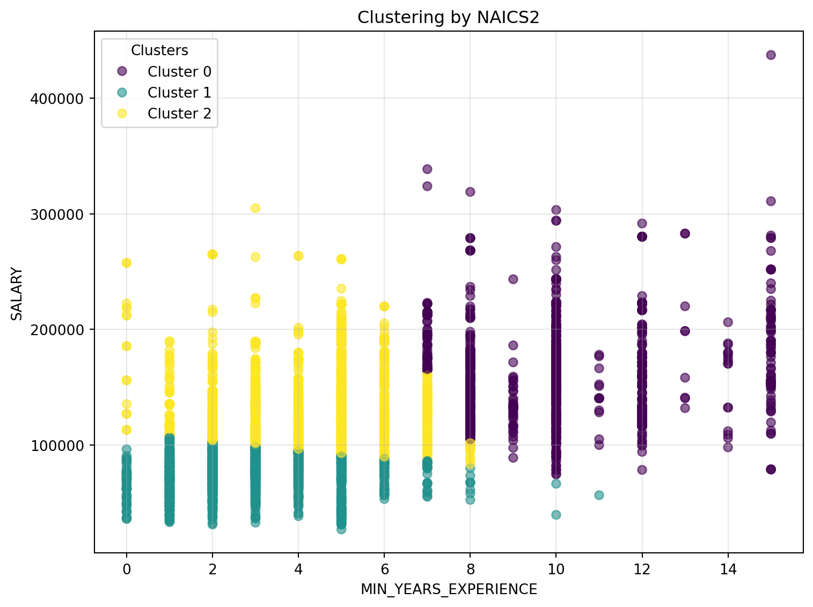

The purpose of this analysis is to determine how much does salary depends on geography versus other variables such as years of experience, job field, remote/onsite work, and level of education.
Variables Used
The following variables will be used in the Random Forest model:
Remote Type (On-Site/Remote)
State Name
Minimum Education levels
NAICS Name
Random Forest Model Deployment & Interpretation
Before using the model for predictive analysis, we will measure how strong the model is.
The table below shows the following metrics:
RMSE (Root Mean Squared Error): Average error between predicted and actual salaries. MAE (Mean Absolute Error): Average error without considering direction (absolute value of the errors). R-Squared: Coefficient of determination that shows how well the predicted salaries approximates actual salaries.
Code
rf = RandomForestRegressor( featuresCol="features", labelCol="SALARY", numTrees=300, maxDepth=12, seed=42)pipeline = Pipeline(stages=indexers + encoders + [assembler, rf])#Train / Test Split - Using 80% of data for training and 20% for testingtrain_df, test_df = rf_df.randomSplit([0.8, 0.2], seed=42)# Fit and Predictmodel = pipeline.fit(train_df)pred = model.transform(test_df)# RMSE, MAE, R squaredev = RegressionEvaluator(labelCol="SALARY", predictionCol="prediction")rmse = ev.setMetricName("rmse").evaluate(pred)mae = ev.setMetricName("mae").evaluate(pred)r2 = ev.setMetricName("r2").evaluate(pred)rf_metrics = pd.DataFrame({"RMSE": [rmse],"MAE": [mae],"R²": [r2]}).round({"RMSE": 0, "MAE": 0, "R²": 3})rf_metrics
RMSE
MAE
R²
0
38828.0
30056.0
0.194
Interpretation: These variables collectively explains the salary by about 20%. Whereas in the testing data, the tested salaries were off by ~39K compared to the actual.
Feature Importance
Feature importance determines which variables used in the model had the most influence/impact on determining the salary. The graph below shows the top 20 variables used.
Interpretation: Despite a relatively lower R squared value below 20% - this chart clearly shows that state (and ultimately location) has less influence on the amount of salary an employee receives compared to their education, position, and field.
Predictive Analysis
This analysis uses synthetic data to estimate what the Random Forest model would predict the salaries would be. There are 10 different variations of job type, state, education, etc. to predict each salary.
Code
from pyspark.sql import functions as Fcat_cols = ["REMOTE_TYPE", "STATE_NAME", "MIN_EDULEVELS", "NAICS2_NAME"]num_cols = ["MIN_YEARS_EXPERIENCE"]# Generic data to test predictive analysistest_data = [ {"REMOTE_TYPE": "Onsite", "STATE_NAME": "California", "MIN_EDULEVELS": "Master's","NAICS2_NAME": "Information", "MIN_YEARS_EXPERIENCE": 7.0}, {"REMOTE_TYPE": "Remote", "STATE_NAME": "Texas", "MIN_EDULEVELS": "Associate or lower","NAICS2_NAME": "Administrative and Support and Waste Management and Remediation Services", "MIN_YEARS_EXPERIENCE": 2.0}, {"REMOTE_TYPE": "Onsite", "STATE_NAME": "Washington", "MIN_EDULEVELS": "Bachelor","NAICS2_NAME": "Professional, Scientific, and Technical Services", "MIN_YEARS_EXPERIENCE": 12.0}, {"REMOTE_TYPE": "Hybrid", "STATE_NAME": "Illinois", "MIN_EDULEVELS": "Bachelor","NAICS2_NAME": "Finance and Insurance", "MIN_YEARS_EXPERIENCE": 6.0}, {"REMOTE_TYPE": "Onsite", "STATE_NAME": "New York", "MIN_EDULEVELS": "Master's","NAICS2_NAME": "Educational Services", "MIN_YEARS_EXPERIENCE": 10.0}, {"REMOTE_TYPE": "Hybrid", "STATE_NAME": "Florida", "MIN_EDULEVELS": "Bachelor","NAICS2_NAME": "Manufacturing", "MIN_YEARS_EXPERIENCE": 8.0}, {"REMOTE_TYPE": "Onsite", "STATE_NAME": "Ohio", "MIN_EDULEVELS": "Associate or lower","NAICS2_NAME": "Health Care and Social Assistance", "MIN_YEARS_EXPERIENCE": 3.0}, {"REMOTE_TYPE": "Onsite", "STATE_NAME": "Virginia", "MIN_EDULEVELS": "PhD","NAICS2_NAME": "Professional, Scientific, and Technical Services", "MIN_YEARS_EXPERIENCE": 9.0}, {"REMOTE_TYPE": "Remote", "STATE_NAME": "Colorado", "MIN_EDULEVELS": "Bachelor","NAICS2_NAME": "Real Estate and Rental and Leasing", "MIN_YEARS_EXPERIENCE": 7.0}, {"REMOTE_TYPE": "Onsite", "STATE_NAME": "Michigan", "MIN_EDULEVELS": "Bachelor","NAICS2_NAME": "Wholesale Trade", "MIN_YEARS_EXPERIENCE": 5.0},]new_df = spark.createDataFrame(test_data)# Preventative for nulls in categoricals your pipeline indexesnew_df = new_df.fillna({c: "Unknown"for c in cat_cols})# Predicting the salaries using trained pipeline modelpred = model.transform(new_df)pred_pdf = ( pred.select( F.col("REMOTE_TYPE").alias("Remote/Onsite"), F.col("STATE_NAME").alias("State"), F.col("MIN_EDULEVELS").alias("Education"), F.col("NAICS2_NAME").alias("Industry"), F.col("MIN_YEARS_EXPERIENCE").alias("Min Yrs Exp"), F.col("prediction").alias("Predicted Salary"), ) .orderBy(F.col("Predicted Salary").desc()) .toPandas())# Round and format currencypred_pdf["Predicted Salary"] = pred_pdf["Predicted Salary"].round(0)# Add a rank columnpred_pdf.insert(0, "#", range(1, len(pred_pdf) +1))# Render a clean, index-free, currency-formatted tablepred_pdf.style.format({"Predicted Salary": "${:,.0f}","Min Yrs Exp": "{:.0f}"}).hide(axis="index")
#
Remote/Onsite
State
Education
Industry
Min Yrs Exp
Predicted Salary
1
Onsite
Virginia
PhD
Professional, Scientific, and Technical Services
9
$231,918
2
Onsite
California
Master's
Information
7
$171,380
3
Onsite
Washington
Bachelor
Professional, Scientific, and Technical Services
12
$139,904
4
Hybrid
Florida
Bachelor
Manufacturing
8
$122,962
5
Hybrid
Illinois
Bachelor
Finance and Insurance
6
$121,860
6
Remote
Texas
Associate or lower
Administrative and Support and Waste Management and Remediation Services
2
$115,777
7
Onsite
Michigan
Bachelor
Wholesale Trade
5
$113,347
8
Remote
Colorado
Bachelor
Real Estate and Rental and Leasing
7
$111,173
9
Onsite
Ohio
Associate or lower
Health Care and Social Assistance
3
$102,261
10
Onsite
New York
Master's
Educational Services
10
$75,983
Interpretation: The results are varied - in some instances the results align with our previous analysis - higher eduction, onsite, and tech should see higher salaries. For example, the first line and eigth line do have the highest salaries being in information and tech alongside 5+ years of experience, onsite, and higher education completed. However, the fith line has the lowest salary, but does not necessarily align in an intuitive sense - 10 years of experience, Masters, onsite, etc. should be ranked higher.
KMeans Clustering Analysis
This analysis explores salary and years of experience by the NAICS Name. As shown below, three groups have been for various NAICS’s, with years of experience horizontally, and salary on the vertical axis.
Code
# Visualizing the resultsplot_pdf = pred.select("MIN_YEARS_EXPERIENCE", "SALARY", "cluster") \ .sample(False, 0.25, 42).toPandas()import matplotlib.pyplot as pltplt.figure(figsize=(8,6))s = plt.scatter(plot_pdf["MIN_YEARS_EXPERIENCE"], plot_pdf["SALARY"], c=plot_pdf["cluster"], alpha=.6)plt.xlabel("MIN_YEARS_EXPERIENCE"); plt.ylabel("SALARY")plt.title("Clustering by NAICS2")handles,_ = s.legend_elements()plt.legend(handles, [f"Cluster {i}"for i insorted(plot_pdf['cluster'].unique())], title="Clusters")plt.grid(True, alpha=.3); plt.tight_layout(); plt.show()

Interpretation: The KMeans cluster mostly uses salaries to separate each cluster group - while some clusters pay lower or higher pay at the same years of experience, this suggests that the industry does influence salaries at different levels of experience. Overall, salaries generally rise with experience, though industry effects can override that pattern.